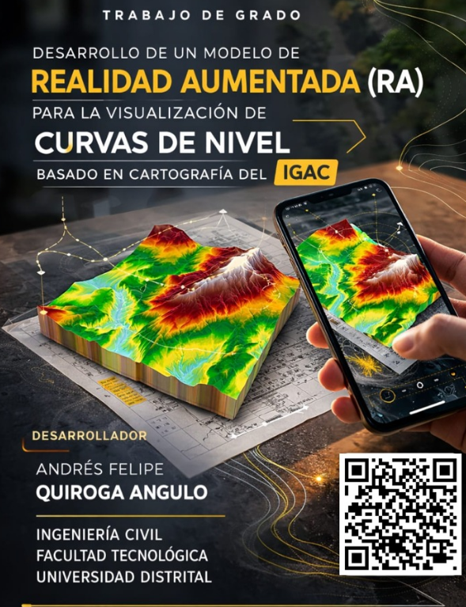
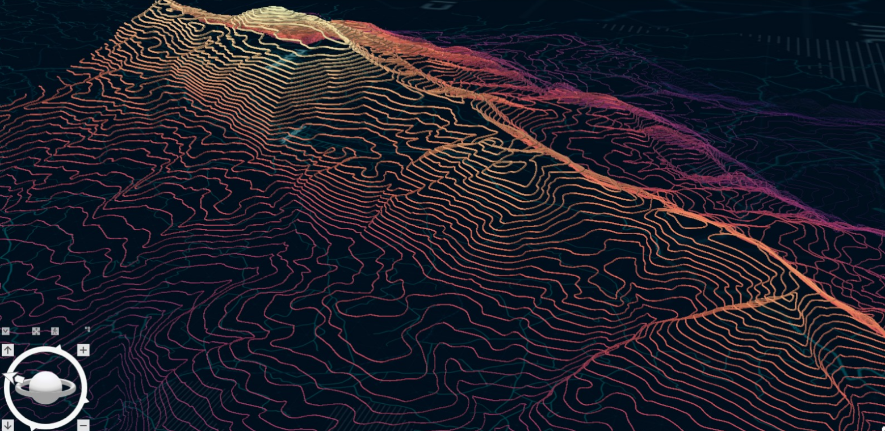

WebAR Topografia
Una experiencia digital para explorar el relieve y la cartografía oficial de Nuevo Colón, Boyacá, mediante una visualización inmersiva, clara y accesible orientada a la formación, la interpretación territorial y la innovación geoespacial.
Fuente
IGAC
Escala
1:10.000
Ubicación
Nuevo Colón, Boyacá
Acceso
Web + RA móvil
Datum
MAGNA-SIRGAS 2018
Del plano bidimensional al entorno interactivo
Este proyecto propone una solución para mejorar la comprensión del relieve a partir de cartografía oficial, integrando procesamiento geoespacial, modelado tridimensional y visualización en realidad aumentada web.
La aplicación permite explorar el terreno de forma más intuitiva, sin necesidad de instalar software adicional, facilitando la lectura espacial de las curvas de nivel en un entorno accesible desde navegador.
El caso de estudio corresponde a la plancha topográfica 191IIIC4 del municipio de Nuevo Colón, Boyacá, empleada como base para estructurar el modelo tridimensional y el visor interactivo.

Cartografía base
Plancha topográfica 191IIIC4 · Nuevo Colón
Flujo de desarrollo del prototipo
El trabajo integró una secuencia técnica de procesamiento geoespacial, modelado 3D, desarrollo web y publicación final del entorno WebAR.

ArcGIS Pro
Organización y procesamiento de la información cartográfica oficial del IGAC para estructurar la base geoespacial del proyecto.
Blender
Modelado tridimensional, optimización geométrica del relieve y preparación del archivo final para visualización web.
Visor Web
Desarrollo del visor con HTML, CSS, JavaScript y model-viewer para navegación 3D, capas y acceso a RA.
Publicación
Implementación en GitHub Pages para acceso directo desde enlace público y experiencia WebAR en dispositivos compatibles.
Galería del proyecto
Registro visual del área de estudio, el producto cartográfico, la interfaz desarrollada y la presentación del prototipo.

Figura principal
Interfaz del visor WebAR

Socialización
Presentación del prototipo

Cartografía oficial

Área de estudio

Identidad visual
Explora el modelo 3D y la experiencia WebAR
Ingresa al visor interactivo para consultar el modelo tridimensional, activar capas temáticas y acceder a la visualización en realidad aumentada desde dispositivos compatibles.